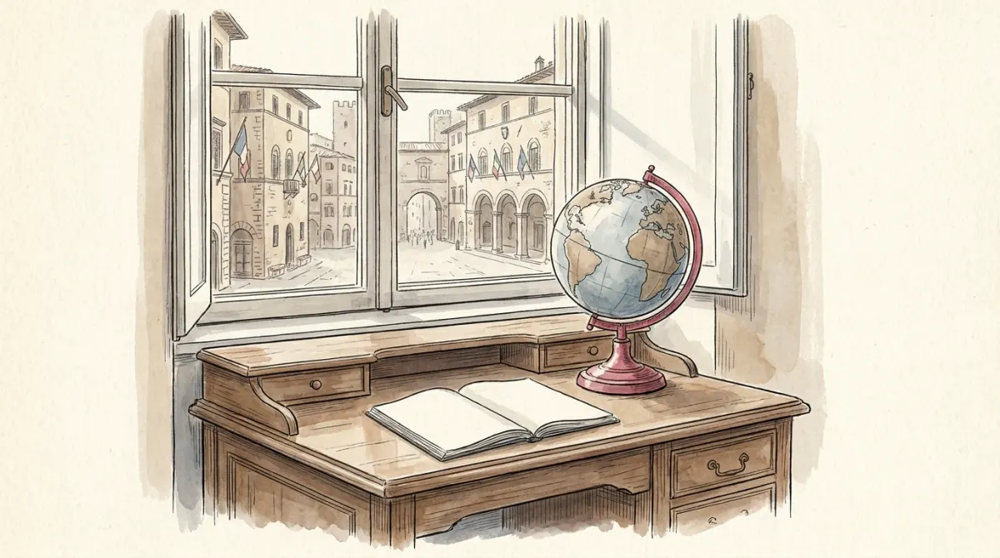

Is this course hard? See for yourself
- These lessons are built from the course's real slides, syllabus, and published correction guidelines, so nothing here is easier than the actual course, and nothing is harder either.
- There is no math. The skill is telling look-alike concepts apart (power vs authority, populism vs clientelism) and writing a 300-word answer that hits a checklist. Both are trainable, and this site trains them.
- Every abstraction gets a story first: a condominium meeting, a walled town, a locked committee room, a translation machine. The exam vocabulary is attached after, when the idea already makes sense.
- Start with lesson 0. It decodes the exam and its real correction grids before you learn a single definition.
Foundations: politics, the State, regimes · first test territory
- Poli-01 · What Politics Is
One condominium meeting containing all of politics: power, authority, values, and how watching became a science.
- Poli-02 · The State: the Walled Town
Weber's one legitimate security company, Westphalia, and Rokkan's four floors you build yourself.
- Poli-03 · Democracy: the Open Microphone
Schumpeter and Dahl, the two-dimensional dimmer, illiberal democracy, and Lijphart's two families.
- Poli-04 · Autocracy: the Locked Committee Room
Totalitarian vs authoritarian, Geddes' keyholders, the tilted pitch, and the durability toolbox.
Actors and processes · second test territory
- Poli-08 · Attitudes & Behaviour: the Inner Map
Political culture, civic culture, cleavages, nativism, and the honest data on who participates.
- Poli-09 · Parties, Pressure Groups & Movements
The marketplace of voices, with two real exam questions: party functions and the determinants of group power.
- Poli-10 · Media & Political Communication
The four ages from party press to micro-targeting, Hallin & Mancini's three models, and echo chambers deflated.
- Poli-11 · Populism: the Thin Jacket
The ideational definition, the three core concepts, the mixing board of host ideologies, friend and foe of democracy.